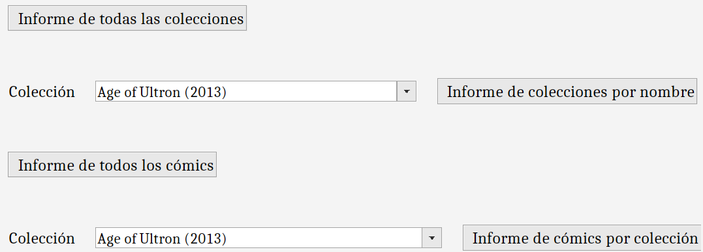

Informes

A derradeira funcionalidade que ofrece o programa é a posibilidade de xerar e consultar informes creados a partir dos datos da base de datos,
algúns deles con filtros proporcionados polo usuario. Os informes posibles son os seguintes:
- Informe de todas as coleccións: mostra os datos de todas as coleccións dispoñibles.
- Informe de coleccións por nome: mostra os datos da colección co nome insertado.
- Informe de todos os cómics: mostra os datos de todos os cómics dispoñibles e un gráfico
de número de cómics por ano. Crea un informe por cada 1000 cómics
- Informe de cómics por colección: mostra os datos de todos os cómics da colección seleccionada e un gráfico
de número de cómics por colección.